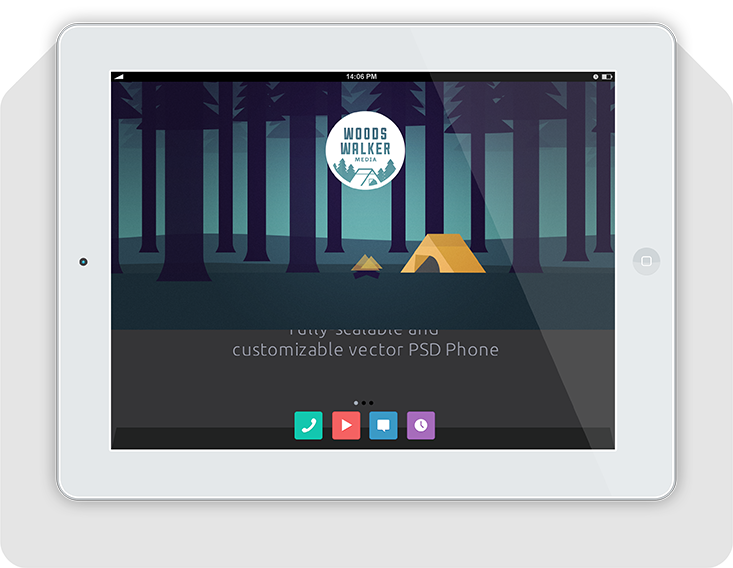

Work
What We Do
Writings
Contact
Flexslider
Woods Walker Media
Branding + Identity + Graphics

Cool stuff
Branding + Identity + Graphics
Bungelow Basics
Branding + Identity + Graphics
Hot or Not Tots
Branding + Identity + Graphics
We may be out there
but we're not that far away
Contact us